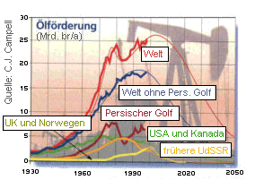
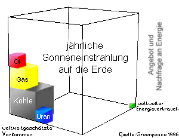

Schönes Dorf Mindersbach
Schönes Dorf MindersbachWarum die Solaranlage gebaut wurde
Historischer Beitrag des Vereins.

Weltweit nehmen Naturkatastrophen zu, Berichte über Überschwemmungen, Orkane und Dürreperioden erreichen uns ständig über Presse und Fernsehen.
Klimaforscher, Meteorologen und Zukunftsforscher warnen schon lange vor den Folgen weltweiter Klimaveränderungen mit den geschilderten Folgen. Für viele Wissenschaftler ist sicher, dass vor allem der sogenannte Treibhauseffekt dafür verantwortlich ist.
Als Ursache für diesen Treibhauseffekt wird die Anreicherung von Kohlenstoffgasen (im Wesentlichen CO2) in der Erdatmosphäre, die durch die Verbrennung von fossilen Energieträgern wie Kohle, Gas und Öl hervorgerufen wird, gesehen.
Kohle, Gas und Öl sind in vorgeschichtlicher Zeit im Laufe von Jahrmillionen aus pflanzlichen und tierischen Ablagerungen entstanden. Dabei wurden große Mengen an Kohlenstoffverbindungen eingelagert, der Atmosphäre entzogen und somit wurde erst der Weg für die Entstehung "höherer Lebewesen" möglich gemacht.
Durch unsere modernen Industriegesellschaften werden diese in einem langen erdgeschichtlichen Prozess entstandenen Energievorräte innerhalb von wenigen Jahrhunderten verbraucht oder - muss man richtigerweise sagen - verschwendet und damit der geschilderte Prozess in Gang gesetzt.

Es ist an der Zeit umzudenken.
Die Vorräte an fossilen Energien sind nicht unbegrenzt vorhanden, Kohle Erdgas und Öl werden zunehmend knapper. Wie lange die Vorräte noch reichen, darüber gibt es unterschiedliche Prognosen, die von maximal 100 bis 200 Jahren ausgehen. Sicher ist, dass die Förderung von diesen Energien zunehmend aufwendiger und damit auch teuerer wird. Öl oder auch Kohle und Gas werden nicht abrupt zu Ende gehen, vielmehr wird irgendwann der Zeitpunkt eintreten, zu dem für die Förderung mehr Energie erforderlich ist, als damit gewonnen werden kann.
Alternative Energien, wie auch die Solarenergie, bietet einen Ausweg aus dieser verhängnisvollen Entwicklung. Unsere Solarstromanlage soll als Zeichen zur Bewahrung der Schöpfung dienen und einen Weg aufzeigen, wie elektrische Energie nachhaltig und umweltfreundlich erzeugt werden kann.
![Microsoft Excel 7.0 Datei [20KB]](symbole/sym_xls.gif) Hier finden Sie Daten als Argumente für regenerative Energiequellen
Hier finden Sie Daten als Argumente für regenerative Energiequellen
Die Daten zu regenerativen Energiequellen als PDF-Datei